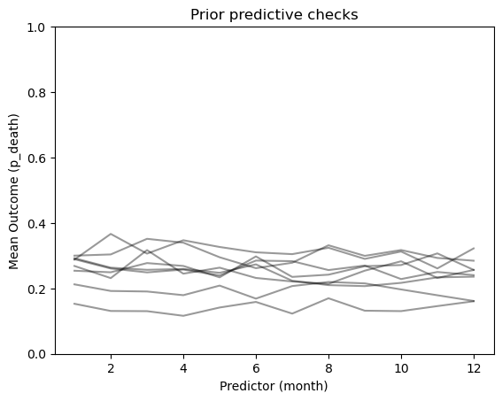

Code
# Load dependencies
import pandas as pd
import matplotlib.pyplot as plt
import numpy as np
import pymc as pm
import arviz as az
from scipy.stats import zscore
from scipy.special import expit
from pymc import do, observe# Load dependencies
import pandas as pd
import matplotlib.pyplot as plt
import numpy as np
import pymc as pm
import arviz as az
from scipy.stats import zscore
from scipy.special import expit
from pymc import do, observehems_d = pd.read_csv('/Users/JO/PhD/neurocritical-transfers/notes/final-analysis/5-modeling-weather-v-outcome/hems_d.csv', index_col=False)d_point = hems_d.dropna(axis=0, subset='both_point_hems_minima').copy()
d_window = hems_d.dropna(axis=0, subset='both_hems_minima_window').copy()
data = d_point
n_samples = len(data)
SAMPLE = np.arange(n_samples)
HEMS_MINIMA, TREATMENT = pd.factorize(data['both_point_hems_minima'], sort=True)
SENDING_CENTER_IDX, SENDING_CENTER = pd.factorize(data['sir_icu_name'], sort=True)
RECEIVING_CENTER_IDX, RECEIVING_CENTER = pd.factorize(data['tertiary_center'], sort=True)
MONTH_IDX, MONTH = pd.factorize(data['utc_month'], sort=True)
DAY_IDX, DAY = pd.factorize(data['utc_day'], sort=True)
HOUR_IDX, HOUR = pd.factorize(data['admission_hour_utc'], sort=True)
DAYLIGHT_IDX, DAYLIGHT = pd.factorize(data['sending_daylight'], sort=True)
AFTERHOURS_IDX, AFTERHOURS = pd.factorize(data['icu_admission_afterhours'], sort=True)
DX_IDX, DX = pd.factorize(data['DX'], sort=True)
AGE_STD = zscore(data['age'])
FEMALE_IDX, FEMALE = pd.factorize(data['sex_female'], sort=True)
CONCIOUSNESS_IDX, CONCIOUSNESS = pd.factorize(data['sir_consciousness_level'], use_na_sentinel=True, sort=True)
CONCIOUSNESS_IDX = np.ma.masked_equal(CONCIOUSNESS_IDX, -1)COORDS = {'sample': SAMPLE, 'treatment': TREATMENT, 'sending_center': SENDING_CENTER, 'daylight': DAYLIGHT, 'afterhours': AFTERHOURS, 'month': MONTH, 'hour': HOUR, 'AGE_STD': AGE_STD, 'dx': DX, 'conciousness': CONCIOUSNESS}
with pm.Model(coords=COORDS) as linear_model:
## Input data variables
# Treatment exposure
x = pm.Bernoulli('X', p=.75, dims='sample')
p_MONTH = pm.Dirichlet('p_M', a=np.ones(12))
#p_DAY = pm.Dirichlet('p_DAY', a=np.ones(366))
p_HOUR = pm.Dirichlet('p_H', a=np.ones(24))
p_DAYLIGHT = pm.Beta('p_D', 2, 2)
p_SENDING_CENTER = pm.Dirichlet('p_SC', a=np.ones(len(SENDING_CENTER)))
p_DX = pm.Dirichlet('p_DX', a=np.ones(len(DX))/len(DX))
p_CONCIOUSNESS = pm.Dirichlet('p_CONCIOUSNESS', a=np.ones(len(CONCIOUSNESS))/len(CONCIOUSNESS))
month = pm.Categorical('MONTH', p=p_MONTH, dims='sample')
#day = pm.Categorical('DAY', p=p_DAY, dims='sample')
hour = pm.Categorical('HOUR', p=p_HOUR, dims='sample')
daylight = pm.Bernoulli('DAYLIGHT', p=p_DAYLIGHT, dims='sample')
afterhours = pm.Bernoulli('AFTERHOURS', p=.75, dims='sample')
# Other variables
age_std = pm.Normal('AGE_STD', 0, 1, dims='sample')
dx = pm.Categorical('DX', p=p_DX, dims='sample')
conciousness_imputed = pm.Categorical('CONCIOUSNESS', p=p_CONCIOUSNESS, dims='sample', observed=CONCIOUSNESS_IDX)
center = pm.Categorical('CENTER', p=p_SENDING_CENTER, dims='sample')/Users/JO/miniforge3/envs/epidemiology-pyenv/lib/python3.11/site-packages/pymc/model/core.py:1317: ImputationWarning: Data in CONCIOUSNESS contains missing values and will be automatically imputed from the sampling distribution.
warnings.warn(impute_message, ImputationWarning)with linear_model:
# Intercept
# Rationale the mu_bar_prior comes from that I expect the "baseline" mortality risk is approx 20%
# The sigma bar prior essentially says that the between center differences are probably small, but that it is not
# impossible that variations could be large (moratlity risk x1.5-2 between centers)
mu_bar_beta_0 = pm.Normal('mu_bar_beta_0', -1, .25)
sigma_bar_beta_0 = pm.HalfNormal('sigma_bar_beta_0', .2)
z_beta_0 = pm.Normal('z_beta_0', 0, 1, dims='sending_center')
beta_0 = pm.Deterministic('beta_0', mu_bar_beta_0 + z_beta_0 * sigma_bar_beta_0, dims='sending_center')
# Treatment effect
# I expect the treatment effect to be very small. Almost zero. The real impact of a high functionining
# HEMS system might be 2-3% on the average patient. Here, we are actually testing the HEMS weather minima.
# Therefore the effect must be diluted by a factor of 2-3 as most transfers will not be undertaken by such a system anyways.
# While the effect is small, there can quite singificant variation between centers
mu_bar_beta_x = pm.Normal('mu_bar_beta_x', 0, .1)
sigma_bar_beta_x = pm.HalfNormal('sigma_bar_beta_x', .1)
z_beta_x = pm.Normal('z_beta_x', 0, 1, dims='sending_center')
beta_x = pm.Deterministic('beta_x', mu_bar_beta_x + z_beta_x * sigma_bar_beta_x, dims='sending_center')
# Confounding effects of time
# I expect the effect size to a few percent for most patients
beta_month = pm.Normal('beta_month', 0, .15, dims='month')
# beta_hour = pm.Normal('beta_hour', 0, .15, dims='hour')
beta_afterhours = pm.Normal('beta_afterhours', 0, .3)
# Non-confounders
# I expect the effect of diagnosis to be larger than that of age. A change of 1 std dev age might have an effect of +/- 5-10% on mortality
# The effect of dx is larger and the effect of concioussness even a bit larger
beta_dx = pm.Normal('beta_dx', 0, 1, dims='dx')
beta_age = pm.Normal('beta_age', 0.5, .75)
beta_conciousness = pm.Normal('beta_conciousness', 0, .75, dims='conciousness')
beta_daylight = pm.Normal('beta_daylight', 0, .1)
# Outcome model
p_i = pm.Deterministic('p_y', beta_0[center] + beta_x[center] * x + beta_daylight * daylight + beta_month[month] + beta_afterhours * afterhours + beta_dx[dx] + beta_conciousness[conciousness_imputed] + beta_age * age_std, dims='sample')
y = pm.Bernoulli('Y', logit_p=p_i, dims='sample')Understanding implications of prior choices is diffucult just looking at distributional assumptions. Here, we will plot implications of the priors on the outcome scale (probability of d30 mortality).
with linear_model:
prior = pm.sample_prior_predictive(8)Sampling: [AFTERHOURS, AGE_STD, CENTER, CONCIOUSNESS_observed, CONCIOUSNESS_unobserved, DAYLIGHT, DX, HOUR, MONTH, X, Y, beta_afterhours, beta_age, beta_conciousness, beta_daylight, beta_dx, beta_month, mu_bar_beta_0, mu_bar_beta_x, p_CONCIOUSNESS, p_D, p_DX, p_H, p_M, p_SC, sigma_bar_beta_0, sigma_bar_beta_x, z_beta_0, z_beta_x]First, let’s see the priors for variation in outcome between the sending centers. Substantial variation should be allowed.
_, ax = plt.subplots()
import xarray as xr
x = xr.DataArray(np.linspace(0, 15, 16).astype(int), dims=["sending_center"],)
priors = prior.prior
y = expit(priors["beta_0"])
ax.plot(x, y.stack(sample=("chain", "draw")), c="k", alpha=0.4)
ax.set_xlabel("Predictor (center_idx)")
ax.set_ylabel("Mean Outcome (p_death)")
ax.set_title("Prior predictive checks")
ax.set_ylim(0,1)(0.0, 1.0)Next, let’s see the prior implications on differences in outcome between months.
_, ax = plt.subplots()
import xarray as xr
x_month = xr.DataArray(np.linspace(1, 12, 12).astype(int), dims=["month"],)
y = expit(priors['mu_bar_beta_0'] + priors["beta_month"])
ax.plot(x_month, y.stack(sample=("chain", "draw")), c="k", alpha=0.4)
ax.set_xlabel("Predictor (month)")
ax.set_ylabel("Mean Outcome (p_death)")
ax.set_title("Prior predictive checks")
ax.set_ylim(0,1)(0.0, 1.0)
Now, the effect of concioussness levels on outcome.
_, ax = plt.subplots()
import xarray as xr
x = xr.DataArray(np.linspace(0, 5, 5).astype(int), dims=["conciousness"],)
y = expit(priors["beta_conciousness"])
ax.plot(x, y.stack(sample=("chain", "draw")), c="k", alpha=0.4)
ax.set_xlabel("Predictor (conciousness)")
ax.set_ylabel("Mean Outcome (p_death)")
ax.set_title("Prior predictive checks")
ax.set_ylim(0,1)(0.0, 1.0)Priors for treatment effects and the treatment effect variation between centers. To make the plot less busy, we only plot for the case where the “baseline” mortality risk is approximately 25%.
_, ax = plt.subplots()
import xarray as xr
x = xr.DataArray(np.linspace(0, 15, 16).astype(int), dims=["sending_center"],)
y0 = expit(-1 + 0*priors["beta_x"])
y1 = expit(-1 + 1*priors["beta_x"])
ax.plot(x, y0.stack(sample=("chain", "draw")), c="k", alpha=0.4)
ax.plot(x, y1.stack(sample=("chain", "draw")), c="darkgrey", alpha=0.4)
ax.set_xlabel("Treatment effect at center_idx")
ax.set_ylabel("Mean Outcome (p_death)")
ax.set_title("Prior predictive checks")
ax.set_ylim(0,1)(0.0, 1.0)Now, standardized age vs. outcome. Here with a baseline risk of a little under 20%.
_, ax = plt.subplots()
import xarray as xr
x_std_age = xr.DataArray(np.linspace(-2, 2, 51), dims=["age"])
y = expit(-2 + priors["beta_age"] * x_std_age)
# Iterate over columns of y and plot each one against x_std_age
for i in range(y.shape[1]):
ax.plot(x_std_age, y[:, i].squeeze(), c="k", alpha=0.4)
ax.set_xlabel("Predictor (std_age)")
ax.set_ylabel("Mean Outcome (p_death)")
ax.set_title("Prior predictive checks")
ax.set_ylim(0, 1)
plt.show()Priors for the effect of diagnosis on outcome.
_, ax = plt.subplots()
import xarray as xr
x_dx = xr.DataArray(np.linspace(1, 13, 13).astype(int), dims=["dx"],)
y = expit(priors['mu_bar_beta_0'] + priors["beta_dx"])
ax.plot(x_dx, y.stack(sample=("chain", "draw")), c="k", alpha=0.4)
ax.set_xlabel("Predictor (dx)")
ax.set_ylabel("Mean Outcome (p_death)")
ax.set_title("Prior predictive checks")
ax.set_ylim(0,1)(0.0, 1.0)And here the effect of daylight on outcome. X axis should really be only 0, 1.
_, ax = plt.subplots()
import xarray as xr
x_daylight = xr.DataArray(np.linspace(0, 1, 2), dims=["daylight"])
y = expit(priors["mu_bar_beta_0"] + priors["beta_daylight"] * x_daylight)
# Iterate over columns of y and plot each one against x_std_age
for i in range(y.shape[1]):
ax.plot(x_daylight, y[:, i].squeeze(), c="k", alpha=0.4)
ax.set_xlabel("Predictor (daylight present)")
ax.set_ylabel("Mean Outcome (p_death)")
ax.set_title("Prior predictive checks")
ax.set_ylim(0, 1)
plt.show()Afterhours effect:
_, ax = plt.subplots()
import xarray as xr
x_afterhours = xr.DataArray(np.linspace(0, 1, 2), dims=["afterhours"])
y = expit(priors["mu_bar_beta_0"] + priors["beta_afterhours"] * x_afterhours)
# Iterate over columns of y and plot each one against x_std_age
for i in range(y.shape[1]):
ax.plot(x_afterhours, y[:, i].squeeze(), c="k", alpha=0.4)
ax.set_xlabel("Predictor (afterhours present)")
ax.set_ylabel("Mean Outcome (p_death)")
ax.set_title("Prior predictive checks")
ax.set_ylim(0, 1)
plt.show()All in all, most priors are conservative, but at least roughly represent my idea of the world. Next, let’s fit the model.
observations={'X': HEMS_MINIMA, 'MONTH': MONTH_IDX, 'HOUR': HOUR_IDX, 'AFTERHOURS': AFTERHOURS_IDX, 'DAYLIGHT': DAYLIGHT_IDX, 'DX': DX_IDX, 'AGE_STD': AGE_STD, 'CENTER': SENDING_CENTER_IDX, 'Y': data.d30}
model_with_obs = observe(linear_model, observations)
with model_with_obs:
idata_linear = pm.sample(idata_kwargs={'log_likelihood':True} )Multiprocess sampling (4 chains in 4 jobs)
CompoundStep
>NUTS: [p_M, p_H, p_D, p_SC, p_DX, p_CONCIOUSNESS, mu_bar_beta_0, sigma_bar_beta_0, z_beta_0, mu_bar_beta_x, sigma_bar_beta_x, z_beta_x, beta_month, beta_afterhours, beta_dx, beta_age, beta_conciousness, beta_daylight]
>CategoricalGibbsMetropolis: [CONCIOUSNESS_unobserved]
Sampling 4 chains for 1_000 tune and 1_000 draw iterations (4_000 + 4_000 draws total) took 80 seconds.COORDS = {'sample': SAMPLE, 'treatment': TREATMENT, 'sending_center': SENDING_CENTER, 'daylight': DAYLIGHT, 'afterhours': AFTERHOURS, 'month': MONTH, 'hour': HOUR, 'AGE_STD': AGE_STD, 'dx': DX, 'conciousness': CONCIOUSNESS}
with pm.Model(coords=COORDS) as linear_model_loose:
## Input data variables
# Treatment exposure
x = pm.Bernoulli('X', p=.75, dims='sample')
p_MONTH = pm.Dirichlet('p_M', a=np.ones(12))
#p_DAY = pm.Dirichlet('p_DAY', a=np.ones(366))
p_HOUR = pm.Dirichlet('p_H', a=np.ones(24))
p_DAYLIGHT = pm.Beta('p_D', 2, 2)
p_SENDING_CENTER = pm.Dirichlet('p_SC', a=np.ones(len(SENDING_CENTER)))
p_DX = pm.Dirichlet('p_DX', a=np.ones(len(DX))/len(DX))
p_CONCIOUSNESS = pm.Dirichlet('p_CONCIOUSNESS', a=np.ones(len(CONCIOUSNESS))/len(CONCIOUSNESS))
month = pm.Categorical('MONTH', p=p_MONTH, dims='sample')
#day = pm.Categorical('DAY', p=p_DAY, dims='sample')
hour = pm.Categorical('HOUR', p=p_HOUR, dims='sample')
daylight = pm.Bernoulli('DAYLIGHT', p=p_DAYLIGHT, dims='sample')
afterhours = pm.Bernoulli('AFTERHOURS', p=.75, dims='sample')
# Other variables
age_std = pm.Normal('AGE_STD', 0, 1, dims='sample')
dx = pm.Categorical('DX', p=p_DX, dims='sample')
conciousness_imputed = pm.Categorical('CONCIOUSNESS', p=p_CONCIOUSNESS, dims='sample', observed=CONCIOUSNESS_IDX)
center = pm.Categorical('CENTER', p=p_SENDING_CENTER, dims='sample')
# Intercept
# Rationale the mu_bar_prior comes from that I expect the "baseline" mortality risk is approx 20%
# The sigma bar prior essentially says that the between center differences are probably small, but that it is not
# impossible that variations could be large (moratlity risk x1.5-2 between centers)
mu_bar_beta_0 = pm.Normal('mu_bar_beta_0', 0, 1)
sigma_bar_beta_0 = pm.HalfNormal('sigma_bar_beta_0', 2)
z_beta_0 = pm.Normal('z_beta_0', 0, 1, dims='sending_center')
beta_0 = pm.Deterministic('beta_0', mu_bar_beta_0 + z_beta_0 * sigma_bar_beta_0, dims='sending_center')
# Treatment effect
# I expect the treatment effect to be very small. Almost zero. The real impact of a high functionining
# HEMS system might be 2-3% on the average patient. Here, we are actually testing the HEMS weather minima.
# Therefore the effect must be diluted by a factor of 2-3 as most transfers will not be undertaken by such a system anyways.
# While the effect is small, there can quite singificant variation between centers
mu_bar_beta_x = pm.Normal('mu_bar_beta_x', 0, 1)
sigma_bar_beta_x = pm.HalfNormal('sigma_bar_beta_x', 2)
z_beta_x = pm.Normal('z_beta_x', 0, 1, dims='sending_center')
beta_x = pm.Deterministic('beta_x', mu_bar_beta_x + z_beta_x * sigma_bar_beta_x, dims='sending_center')
# Confounding effects of time
# I expect the effect size to a few percent for most patients
beta_month = pm.Normal('beta_month', 0, 1, dims='month')
beta_afterhours = pm.Normal('beta_afterhours', 0, 1)
# Non-confounders
# I expect the effect of diagnosis to be larger than that of age. A change of 1 std dev age might have an effect of +/- 5-10% on mortality
# The effect of dx is larger and the effect of concioussness even a bit larger
beta_dx = pm.Normal('beta_dx', 0, 1, dims='dx')
beta_age = pm.Normal('beta_age', 0.5, 2)
beta_conciousness = pm.Normal('beta_conciousness', 0, 2, dims='conciousness')
beta_daylight = pm.Normal('beta_daylight', 0, 1)
# Outcome model
p_i = pm.Deterministic('p_y', beta_0[center] + beta_x[center] * x + beta_daylight * daylight + beta_month[month] + beta_afterhours * afterhours + beta_dx[dx] + beta_conciousness[conciousness_imputed] + beta_age * age_std, dims='sample')
y = pm.Bernoulli('Y', logit_p=p_i, dims='sample')
observations={'X': HEMS_MINIMA, 'MONTH': MONTH_IDX, 'HOUR': HOUR_IDX, 'AFTERHOURS': AFTERHOURS_IDX, 'DAYLIGHT': DAYLIGHT_IDX, 'DX': DX_IDX, 'AGE_STD': AGE_STD, 'CENTER': SENDING_CENTER_IDX, 'Y': data.d30}
model_with_obs = observe(linear_model, observations)
with model_with_obs:
idata_linear_loose = pm.sample(idata_kwargs={'log_likelihood':True} )/Users/JO/miniforge3/envs/epidemiology-pyenv/lib/python3.11/site-packages/pymc/model/core.py:1317: ImputationWarning: Data in CONCIOUSNESS contains missing values and will be automatically imputed from the sampling distribution.
warnings.warn(impute_message, ImputationWarning)
Multiprocess sampling (4 chains in 4 jobs)
CompoundStep
>NUTS: [p_M, p_H, p_D, p_SC, p_DX, p_CONCIOUSNESS, mu_bar_beta_0, sigma_bar_beta_0, z_beta_0, mu_bar_beta_x, sigma_bar_beta_x, z_beta_x, beta_month, beta_afterhours, beta_dx, beta_age, beta_conciousness, beta_daylight]
>CategoricalGibbsMetropolis: [CONCIOUSNESS_unobserved]
Sampling 4 chains for 1_000 tune and 1_000 draw iterations (4_000 + 4_000 draws total) took 88 seconds.Here a full luxury bayesian inference models with linear dependencies will be defined. Priors the same as in the linear regression, but with less conservative priors for the effect of month and daylight on HEMS minima.
COORDS = {'sample': SAMPLE, 'treatment': TREATMENT, 'sending_center': SENDING_CENTER, 'daylight': DAYLIGHT, 'afterhours': AFTERHOURS, 'day': DAY, 'month': MONTH, 'hour': HOUR, 'AGE_STD': AGE_STD, 'dx': DX, 'conciousness': CONCIOUSNESS}
with pm.Model(coords=COORDS) as FLBI:
## Input data variables
p_MONTH = pm.Dirichlet('p_M', a=np.ones(12))
p_DAY = pm.Dirichlet('p_DAY', a=np.ones(366))
p_HOUR = pm.Dirichlet('p_H', a=np.ones(24))
p_DAYLIGHT = pm.Beta('p_D', 2, 2)
p_SENDING_CENTER = pm.Dirichlet('p_SC', a=np.ones(len(SENDING_CENTER)))
p_DX = pm.Dirichlet('p_DX', a=np.ones(len(DX))/len(DX))
p_CONCIOUSNESS = pm.Dirichlet('p_CONCIOUSNESS', a=np.ones(len(CONCIOUSNESS))/len(CONCIOUSNESS))
month = pm.Categorical('MONTH', p=p_MONTH, dims='sample')
day = pm.Categorical('DAY', p=p_DAY, dims='sample')
hour = pm.Categorical('HOUR', p=p_HOUR, dims='sample')
daylight = pm.Bernoulli('DAYLIGHT', p=p_DAYLIGHT, dims='sample')
afterhours = pm.Bernoulli('AFTERHOURS', p=.75, dims='sample')
# Other variables
age_std = pm.Normal('AGE_STD', 0, 1, dims='sample')
dx = pm.Categorical('DX', p=p_DX, dims='sample')
conciousness_imputed = pm.Categorical('CONCIOUSNESS', p=p_CONCIOUSNESS, dims='sample', observed=CONCIOUSNESS_IDX)
center = pm.Categorical('CENTER', p=p_SENDING_CENTER, dims='sample')/Users/JO/miniforge3/envs/epidemiology-pyenv/lib/python3.11/site-packages/pymc/model/core.py:1317: ImputationWarning: Data in CONCIOUSNESS contains missing values and will be automatically imputed from the sampling distribution.
warnings.warn(impute_message, ImputationWarning)with FLBI:
# Treatment assignment model
# Month. hour and daylight causes X
beta_x_0 = pm.Normal('beta_x_0', 0, 2)
beta_x_month = pm.Normal('beta_x_month', 0, .5, dims='month')
beta_x_hour = pm.Normal('beta_x_hour', 0, .5, dims='hour')
beta_x_daylight = pm.Normal('beta_x_daylight', 1, 2)
p_x = pm.Deterministic('p_x', pm.math.invlogit(beta_x_0 + beta_x_month[month] + beta_x_hour[hour] + beta_x_daylight * daylight))
x = pm.Bernoulli('X', p=p_x, dims='sample')
# Outcome model
# Intercept
# Rationale the mu_bar_prior comes from that I expect the "baseline" mortality risk is approx 20%
# The sigma bar prior essentially says that the between center differences are probably small, but that it is not
# impossible that variations could be large (moratlity risk x1.5-2 between centers)
mu_bar_beta_0 = pm.Normal('mu_bar_beta_0', -1, .1)
sigma_bar_beta_0 = pm.HalfNormal('sigma_bar_beta_0', .1)
z_beta_0 = pm.Normal('z_beta_0', 0, 1, dims='sending_center')
beta_0 = pm.Deterministic('beta_0', mu_bar_beta_0 + z_beta_0 * sigma_bar_beta_0, dims='sending_center')
# Treatment effect
# I expect the treatment effect to be very small. Almost zero. The real impact of a high functionining
# HEMS system might be 2-3% on the average patient. Here, we are actually testing the HEMS weather minima.
# Therefore the effect must be diluted by a factor of 2-3 as most transfers will not be undertaken by such a system anyways.
# While the effect is small, there can quite singificant variation between centers
mu_bar_beta_x = pm.Normal('mu_bar_beta_x', 0, .1)
sigma_bar_beta_x = pm.HalfNormal('sigma_bar_beta_x', .1)
z_beta_x = pm.Normal('z_beta_x', 0, 1, dims='sending_center')
beta_x = pm.Deterministic('beta_x', mu_bar_beta_x + z_beta_x * sigma_bar_beta_x, dims='sending_center')
# Confounding effects of time
beta_month = pm.Normal('beta_month', 0, .15, dims='month')
#beta_hour = pm.Normal('beta_hour', 0, .15, dims='hour')
beta_afterhours = pm.Normal('beta_afterhours', 0, .3)
# Non-confounders
beta_dx = pm.Normal('beta_dx', 0, 1, dims='dx')
beta_age = pm.Normal('beta_age', 0.5, .75)
beta_conciousness = pm.Normal('beta_conciousness', 0, .75, dims='conciousness')
# Outcome model
p_i = pm.Deterministic('p_y', beta_0[center] + beta_x[center] * x + beta_month[month] + beta_afterhours * afterhours + beta_dx[dx] + beta_conciousness[conciousness_imputed] + beta_age * age_std, dims='sample')
y = pm.Bernoulli('Y', logit_p=p_i, dims='sample')observations={'X': HEMS_MINIMA, 'MONTH': MONTH_IDX, 'HOUR': HOUR_IDX, 'AFTERHOURS': AFTERHOURS_IDX, 'DAY': DAY_IDX, 'DAYLIGHT': DAYLIGHT_IDX, 'DX': DX_IDX, 'AGE_STD': AGE_STD, 'CENTER': SENDING_CENTER_IDX, 'Y': data.d30}
flbi_model_with_obs = observe(FLBI, observations)
with flbi_model_with_obs:
idata_flbi = pm.sample(idata_kwargs={'log_likelihood':True}, target_accept=.95)Multiprocess sampling (4 chains in 4 jobs)
CompoundStep
>NUTS: [p_M, p_DAY, p_H, p_D, p_SC, p_DX, p_CONCIOUSNESS, beta_x_0, beta_x_month, beta_x_hour, beta_x_daylight, mu_bar_beta_0, sigma_bar_beta_0, z_beta_0, mu_bar_beta_x, sigma_bar_beta_x, z_beta_x, beta_month, beta_afterhours, beta_dx, beta_age, beta_conciousness]
>CategoricalGibbsMetropolis: [CONCIOUSNESS_unobserved]
Sampling 4 chains for 1_000 tune and 1_000 draw iterations (4_000 + 4_000 draws total) took 329 seconds.
There were 1 divergences after tuning. Increase `target_accept` or reparameterize.Finally, a full luxury bayesian inference model with GP priors for the effect of time on outcome and treatment in order to allow for potentially better modeling of these effects. This model samples slow when including proper missing data handling.
n_samples = len(data)
SAMPLE = np.arange(n_samples)
HEMS_MINIMA, TREATMENT = pd.factorize(data['both_point_hems_minima'], sort=True)
SENDING_CENTER_IDX, SENDING_CENTER = pd.factorize(data['sir_icu_name'], sort=True)
RECEIVING_CENTER_IDX, RECEIVING_CENTER = pd.factorize(data['tertiary_center'], sort=True)
MONTH_IDX, MONTH = pd.factorize(data['utc_month'], sort=True)
DAY_IDX, DAY = pd.factorize(data['utc_day'], sort=True)
HOUR_IDX, HOUR = pd.factorize(data['utc_hour'], sort=True)
DAYLIGHT_IDX, DAYLIGHT = pd.factorize(data['sending_daylight'], sort=True)
DX_IDX, DX = pd.factorize(data['DX'], sort=True)
AGE_STD = zscore(data['age'])
FEMALE_IDX, FEMALE = pd.factorize(data['sex_female'], sort=True)
CONCIOUSNESS_IDX, CONCIOUSNESS = pd.factorize(data['sir_consciousness_level'], use_na_sentinel=False, sort=True)
#CONCIOUSNESS_IDX = np.ma.masked_equal(CONCIOUSNESS_IDX, -1)COORDS = {'sample': SAMPLE, 'treatment': TREATMENT, 'sending_center': SENDING_CENTER, 'daylight': DAYLIGHT, 'day': DAY, 'month': MONTH, 'hour': HOUR, 'AGE_STD': AGE_STD, 'dx': DX, 'conciousness': CONCIOUSNESS}
with pm.Model(coords=COORDS) as hsgp:
## Input data variables
# Treatment exposure
p_MONTH = pm.Dirichlet('p_M', a=np.ones(12))
p_DAY = pm.Dirichlet('p_DAY', a=np.ones(366))
p_HOUR = pm.Dirichlet('p_H', a=np.ones(24))
p_DAYLIGHT = pm.Beta('p_D', 2, 2)
p_SENDING_CENTER = pm.Dirichlet('p_SC', a=np.ones(len(SENDING_CENTER)))
p_DX = pm.Dirichlet('p_DX', a=np.ones(len(DX))/len(DX))
p_CONCIOUSNESS = pm.Dirichlet('p_CONCIOUSNESS', a=np.ones(len(CONCIOUSNESS))/len(CONCIOUSNESS))
month = pm.Categorical('MONTH', p=p_MONTH, dims='sample')
day = pm.Categorical('DAY', p=p_DAY, dims='sample')
hour = pm.Categorical('HOUR', p=p_HOUR, dims='sample')
daylight = pm.Bernoulli('DAYLIGHT', p=p_DAYLIGHT, dims='sample')
afterhours = pm.Bernoulli('AFTERHOURS', p=.75, dims='sample')
# Other variables
age_std = pm.Normal('AGE_STD', 0, 1, dims='sample')
dx = pm.Categorical('DX', p=p_DX, dims='sample')
conciousness_imputed = pm.Categorical('CONCIOUSNESS', p=p_CONCIOUSNESS, dims='sample', observed=CONCIOUSNESS_IDX)
center = pm.Categorical('CENTER', p=p_SENDING_CENTER, dims='sample')with hsgp:
# treatment assignemnt
# Month. hour and daylight causes X
beta_x_0 = pm.Normal('beta_x_0', 0, 2)
ls_x_MONTH = pm.Gamma('ls_x_MONTH', 2, 2)
eta_x_MONTH = pm.HalfNormal('eta_x_MONTH', 1)
cov_x_MONTH = pm.gp.cov.Periodic(1, ls=ls_x_MONTH, period=12)
gp_x_MONTH = pm.gp.HSGPPeriodic(m=20, cov_func=cov_x_MONTH, scale=eta_x_MONTH**2)
f_x_MONTH = gp_x_MONTH.prior('f_x_MONTH', X=month[:,None])
ls_x_HOUR = pm.Gamma('ls_x_HOUR', 2, 2)
eta_x_HOUR = pm.HalfNormal('eta_x_HOUR', 1)
cov_x_HOUR = pm.gp.cov.Periodic(1, ls=ls_x_HOUR, period=24)
gp_x_HOUR = pm.gp.HSGPPeriodic(m=20, cov_func=cov_x_HOUR, scale=eta_x_HOUR**2)
f_x_HOUR = gp_x_HOUR.prior('f_x_HOUR', X=hour[:,None])
beta_x_daylight = pm.Normal('beta_x_daylight', 1, 2)
p_x = pm.Deterministic('p_x', pm.math.invlogit(beta_x_0 + f_x_MONTH + f_x_HOUR + beta_x_daylight * daylight))
x = pm.Bernoulli('X', p=p_x, dims='sample')
# Intercept
# Rationale the mu_bar_prior comes from that I expect the "baseline" mortality risk is approx 20%
# The sigma bar prior essentially says that the between center differences are probably small, but that it is not
# impossible that variations could be large (moratlity risk x1.5-2 between centers)
mu_bar_beta_0 = pm.Normal('mu_bar_beta_0', -1, .25)
sigma_bar_beta_0 = pm.HalfNormal('sigma_bar_beta_0', .2)
z_beta_0 = pm.Normal('z_beta_0', 0, 1, dims='sending_center')
beta_0 = pm.Deterministic('beta_0', mu_bar_beta_0 + z_beta_0 * sigma_bar_beta_0, dims='sending_center')
# Treatment effect
# I expect the treatment effect to be very small. Almost zero. The real impact of a high functionining
# HEMS system might be 2-3% on the average patient. Here, we are actually testing the HEMS weather minima.
# Therefore the effect must be diluted by a factor of 2-3 as most transfers will not be undertaken by such a system anyways.
# While the effect is small, there can quite singificant variation between centers
mu_bar_beta_x = pm.Normal('mu_bar_beta_x', 0, .1)
sigma_bar_beta_x = pm.HalfNormal('sigma_bar_beta_x', .1)
z_beta_x = pm.Normal('z_beta_x', 0, 1, dims='sending_center')
beta_x = pm.Deterministic('beta_x', mu_bar_beta_x + z_beta_x * sigma_bar_beta_x, dims='sending_center')
# Confounding effects of time
ls_MONTH = pm.Gamma('ls_MONTH', 2, 2)
eta_MONTH = pm.HalfNormal('eta_MONTH', 1)
cov_MONTH = pm.gp.cov.Periodic(1, ls=ls_MONTH, period=12)
gp_MONTH = pm.gp.HSGPPeriodic(m=20, cov_func=cov_MONTH, scale=eta_MONTH**2)
f_MONTH = gp_MONTH.prior('f_MONTH', X=month[:,None])
ls_HOUR = pm.Gamma('ls_HOUR', 2, 2)
eta_HOUR = pm.HalfNormal('eta_HOUR', 1)
cov_HOUR = pm.gp.cov.Periodic(1, ls=ls_HOUR, period=24)
gp_HOUR = pm.gp.HSGPPeriodic(m=20, cov_func=cov_HOUR, scale=eta_HOUR**2)
f_HOUR = gp_HOUR.prior('f_HOUR', X=hour[:,None])
# Non-confounders
# I expect the effect of diagnosis to be larger than that of age. A change of 1 std dev age might have an effect of +/- 5-10% on mortality
# The effect of dx is larger and the effect of concioussness even a bit larger
beta_dx = pm.Normal('beta_dx', 0, 1, dims='dx')
beta_age = pm.Normal('beta_age', 0.5, .75)
beta_conciousness = pm.Normal('beta_conciousness', 0, .75, dims='conciousness')
beta_daylight = pm.Normal('beta_daylight', 0, .1)
# Outcome model
p_i = pm.Deterministic('p_y', pm.math.invlogit(beta_0[center] + beta_x[center] * x + beta_daylight * daylight + f_MONTH + f_HOUR + beta_dx[dx] + beta_conciousness[conciousness_imputed] + beta_age * age_std), dims='sample')
y = pm.Bernoulli('Y', p=p_i, dims='sample')observations={'X': HEMS_MINIMA, 'MONTH': MONTH_IDX, 'HOUR': HOUR_IDX, 'AFTERHOURS': AFTERHOURS_IDX, 'DAY': DAY_IDX, 'DAYLIGHT': DAYLIGHT_IDX, 'DX': DX_IDX, 'AGE_STD': AGE_STD, 'CENTER': SENDING_CENTER_IDX, 'Y': data.d30}
#observations={'X': HEMS_MINIMA, 'MONTH': MONTH_IDX, 'HOUR': HOUR_IDX, 'AFTERHOURS': AFTERHOURS_IDX, 'DAYLIGHT': DAYLIGHT_IDX, 'DX': DX_IDX, 'AGE_STD': AGE_STD, 'CENTER': SENDING_CENTER_IDX, 'Y': data.d30}
hspg_model_with_obs = observe(hsgp, observations)
with hspg_model_with_obs:
idata_hsgp = pm.sample(nuts_sampler='nutpie', idata_kwargs={'log_likelihood':True}, target_accept=.9)/Users/JO/miniforge3/envs/epidemiology-pyenv/lib/python3.11/site-packages/pytensor/tensor/rewriting/elemwise.py:702: UserWarning: Optimization Warning: The Op iv does not provide a C implementation. As well as being potentially slow, this also disables loop fusion.
warn(
/Users/JO/miniforge3/envs/epidemiology-pyenv/lib/python3.11/site-packages/pymc/sampling/mcmc.py:292: UserWarning: `idata_kwargs` are currently ignored by the nutpie sampler
warnings.warn(
/Users/JO/miniforge3/envs/epidemiology-pyenv/lib/python3.11/site-packages/pytensor/tensor/rewriting/elemwise.py:702: UserWarning: Optimization Warning: The Op iv does not provide a C implementation. As well as being potentially slow, this also disables loop fusion.
warn(
/Users/JO/miniforge3/envs/epidemiology-pyenv/lib/python3.11/site-packages/pytensor/link/numba/dispatch/basic.py:373: UserWarning: Numba will use object mode to run AdvancedSetSubtensor's perform method
warnings.warn(
/Users/JO/miniforge3/envs/epidemiology-pyenv/lib/python3.11/site-packages/pytensor/tensor/rewriting/elemwise.py:702: UserWarning: Optimization Warning: The Op iv does not provide a C implementation. As well as being potentially slow, this also disables loop fusion.
warn(
/Users/JO/miniforge3/envs/epidemiology-pyenv/lib/python3.11/site-packages/pytensor/link/numba/dispatch/basic.py:373: UserWarning: Numba will use object mode to run AdvancedSetSubtensor's perform method
warnings.warn(
/Users/JO/miniforge3/envs/epidemiology-pyenv/lib/python3.11/site-packages/nutpie/compile_pymc.py:416: NumbaWarning: Cannot cache compiled function "numba_funcified_fgraph" as it uses dynamic globals (such as ctypes pointers and large global arrays)
return inner(x)
/Users/JO/miniforge3/envs/epidemiology-pyenv/lib/python3.11/site-packages/nutpie/compile_pymc.py:416: NumbaWarning: Cannot cache compiled function "numba_funcified_fgraph" as it uses dynamic globals (such as ctypes pointers and large global arrays)
return inner(x)Let’s plot posteriors for some of the coefficients. As we will see, there are no real differences between models. Also
axes = az.plot_forest(
[idata_linear, idata_linear_loose, idata_flbi,idata_hsgp],
model_names=['linear', 'linear loose priors', 'flbi linear', 'flbi hspg'],
kind='ridgeplot', ess=True,
r_hat=True,
ridgeplot_overlap=0.7,
hdi_prob=0.98,
combined=True,
var_names=['mu_bar_beta_x', 'beta_x', 'beta_age', 'beta_x_month', 'beta_month'])
axes[0].set_title('Estimated θ for models (98% HDI)')
axes[0].axvline(x=0, color='black', linestyle='--', alpha=0.3);Let’s estimate the treatment effect in the HSGP model for example. It should be close to 0.
CONCIOUSNESS_IDX, CONCIOUSNESS = pd.factorize(data['sir_consciousness_level'], use_na_sentinel=False, sort=True)
cf_observations={'MONTH': MONTH_IDX, 'HOUR': HOUR_IDX, 'CONCIOUSNESS': CONCIOUSNESS_IDX, 'AGE_STD': AGE_STD, 'AFTERHOURS': AFTERHOURS_IDX, 'DAY': DAY_IDX, 'DAYLIGHT': DAYLIGHT_IDX, 'DX': DX_IDX, 'CENTER': SENDING_CENTER_IDX}
SEED = 42
hsgp_counterfactual = do(hsgp, cf_observations)
hsgp_do0 = do(hsgp_counterfactual, {'X': np.zeros(n_samples, dtype='int32')})
hsgp_do1 = do(hsgp_counterfactual, {'X': np.ones(n_samples, dtype='int32')})do0_idata = pm.sample_posterior_predictive(
idata_hsgp,
hsgp_do0,
var_names=['p_y', 'Y', 'X', 'AFTERHOURS', 'CONCIOUSNESS'],
predictions=True,
random_seed=SEED,
)
do1_idata = pm.sample_posterior_predictive(
idata_hsgp,
hsgp_do1,
var_names=['p_y','Y', 'X', 'AFTERHOURS', 'CONCIOUSNESS'],
predictions=True,
random_seed=SEED,
)Sampling: [Y]
Sampling: [Y]ate = (do1_idata.predictions.p_y - do0_idata.predictions.p_y).mean(dim='sample').values
az.plot_density(
data=ate,
hdi_prob=1,
shade=0.2,
point_estimate='median'
)
plt.xlim(-.2, .2)
plt.title('Estimated ATE of X on p_y');I.e. no effect of HEMS minima being met on 30 day mortality.
HEMS minima being met does not seem to have an impact on 30-day mortality.
This seems reasonable. My prior belief that a high performing CCT-system will have an absolute mortality benefit of <5% on a population with very high short term mortality risk. (I’m imagining 100 transfers of very sick ICU patients with acute MOF, hemorrhagic chock, critical neuro-ICU conditions, with a 30-40% ICU mortality risk. I can imagine in transit disasters being avoided by the high performing system in maybe 2-3 of these cases. Add to this some nebolous benefit in the slightly longer term.) The mortality benefit in a population with much lower mortality such as here (18%) must be lower. Maybe 2%. Probably lower.
But imagine that it is 2%. Imagine now a set of identical patients exposed to different HEMS minima conditions. In the HEMS minima = 0, group, the mortality will stay at the baseline 18%. In the HEMS minima = 1 group, I suspect that way less than half will be transported by HEMS, further diluting the potential benefit. Also, some patients in the HEMS minima = 0 group will probably be transported by HEMS at a later point than the 2 hour time window I have set up.
Finally, it could be that CCT systems have zero impact on mortality.
Here I will use the frequentist library statsmodels to do a logistic regression with hems minima as a predictor together with confounders. Instead of hour of day I’ve used daylight and “afterhours” to account for diurnal variation. HEMS minima is n.s.
import statsmodels.formula.api as smf
data['age_std'] = AGE_STD
data['month_factor'] = data.icu_admission_month.astype(str)
log_reg = smf.logit("d30 ~ both_point_hems_minima + age_std + sir_consciousness_level + month_factor + icu_admission_afterhours + sending_daylight", data=data).fit()
log_reg.summary()Optimization terminated successfully.
Current function value: 0.329679
Iterations 7| Dep. Variable: | d30 | No. Observations: | 2798 |
| Model: | Logit | Df Residuals: | 2778 |
| Method: | MLE | Df Model: | 19 |
| Date: | Tue, 07 May 2024 | Pseudo R-squ.: | 0.1516 |
| Time: | 09:54:37 | Log-Likelihood: | -922.44 |
| converged: | True | LL-Null: | -1087.3 |
| Covariance Type: | nonrobust | LLR p-value: | 1.580e-58 |
| coef | std err | z | P>|z| | [0.025 | 0.975] | |
| Intercept | -3.4726 | 0.292 | -11.873 | 0.000 | -4.046 | -2.899 |
| both_point_hems_minima[T.True] | 0.1308 | 0.196 | 0.668 | 0.504 | -0.253 | 0.514 |
| sir_consciousness_level[T.II (GCS 7-12)] | 1.2394 | 0.158 | 7.865 | 0.000 | 0.931 | 1.548 |
| sir_consciousness_level[T.III (GCS 6)] | 1.8329 | 0.213 | 8.601 | 0.000 | 1.415 | 2.251 |
| sir_consciousness_level[T.IV (GCS 5)] | 2.0666 | 0.237 | 8.707 | 0.000 | 1.601 | 2.532 |
| sir_consciousness_level[T.V (GCS ≤4)] | 2.5214 | 0.188 | 13.421 | 0.000 | 2.153 | 2.890 |
| month_factor[T.10] | -0.2389 | 0.291 | -0.821 | 0.412 | -0.809 | 0.332 |
| month_factor[T.11] | 0.0438 | 0.279 | 0.157 | 0.875 | -0.502 | 0.590 |
| month_factor[T.12] | -0.0501 | 0.289 | -0.174 | 0.862 | -0.616 | 0.515 |
| month_factor[T.2] | 0.1954 | 0.269 | 0.725 | 0.468 | -0.333 | 0.723 |
| month_factor[T.3] | -0.0390 | 0.277 | -0.141 | 0.888 | -0.582 | 0.504 |
| month_factor[T.4] | -0.6795 | 0.310 | -2.193 | 0.028 | -1.287 | -0.072 |
| month_factor[T.5] | -0.5691 | 0.299 | -1.902 | 0.057 | -1.156 | 0.017 |
| month_factor[T.6] | -0.2996 | 0.292 | -1.025 | 0.306 | -0.873 | 0.274 |
| month_factor[T.7] | -0.3327 | 0.291 | -1.144 | 0.253 | -0.903 | 0.237 |
| month_factor[T.8] | -0.9261 | 0.319 | -2.905 | 0.004 | -1.551 | -0.301 |
| month_factor[T.9] | -0.1968 | 0.285 | -0.691 | 0.490 | -0.756 | 0.362 |
| sending_daylight[T.True] | 0.5299 | 0.164 | 3.230 | 0.001 | 0.208 | 0.851 |
| age_std | 0.6197 | 0.073 | 8.537 | 0.000 | 0.477 | 0.762 |
| icu_admission_afterhours | 0.2270 | 0.153 | 1.486 | 0.137 | -0.072 | 0.526 |